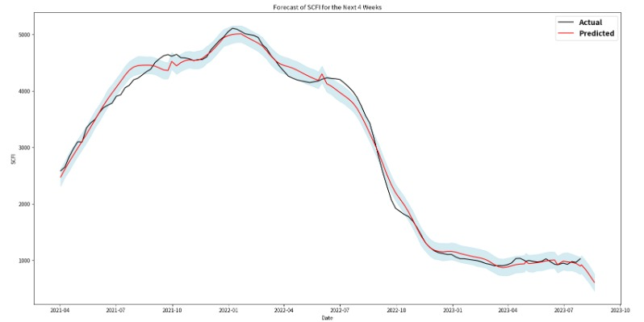
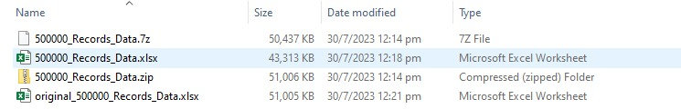

Portfolio
Some of my work
Check them here.
SCFI analysis
In this example, I briefly analyze 120 weeks of publicly available Shanghai Containerized Freight Index (SCFI) and forecast its values for the next four weeks. The SCFI is a critical indicator of freight rates for container shipping, and understanding its trends can provide valuable insights for stakeholders in the shipping industry. My preferred package here is the open-source Prophet package from Facebook for our forecasting due to its robust handling of time series data with strong seasonal effects. Prophet, developed by Facebook, is designed to handle the complexities of business time series data, including seasonality. It uses a decomposable time series model to handle these components and provides a flexible and efficient way to generate high-quality forecasts.
First we review the data values over 120 weeks

Then we compare forecasts with actuals historically, and get a prediction for next 4 weeks.

Winzip Macro
Winzip macro helps any user to shrink their large excel files, it's more effective than simple zip

Original file size was 50MB, you can see zip and 7z formats reduced just 1-2%.
Then my Winzip macro in comparison was able to cut down its size by 15%, this is very handy when we are dealing with email attachment size limits.